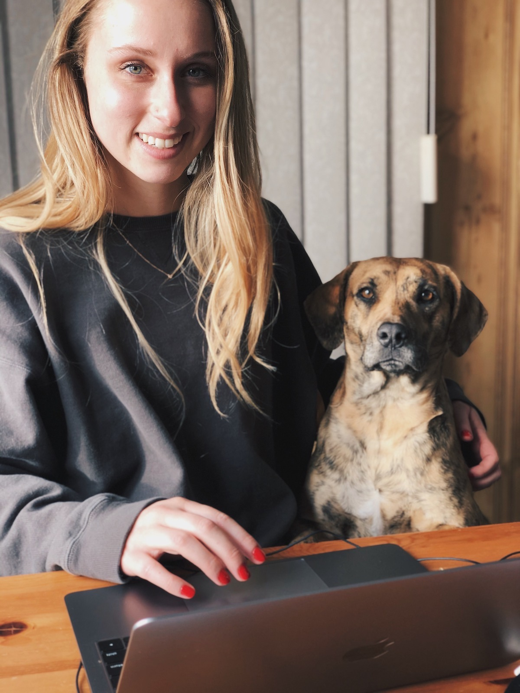
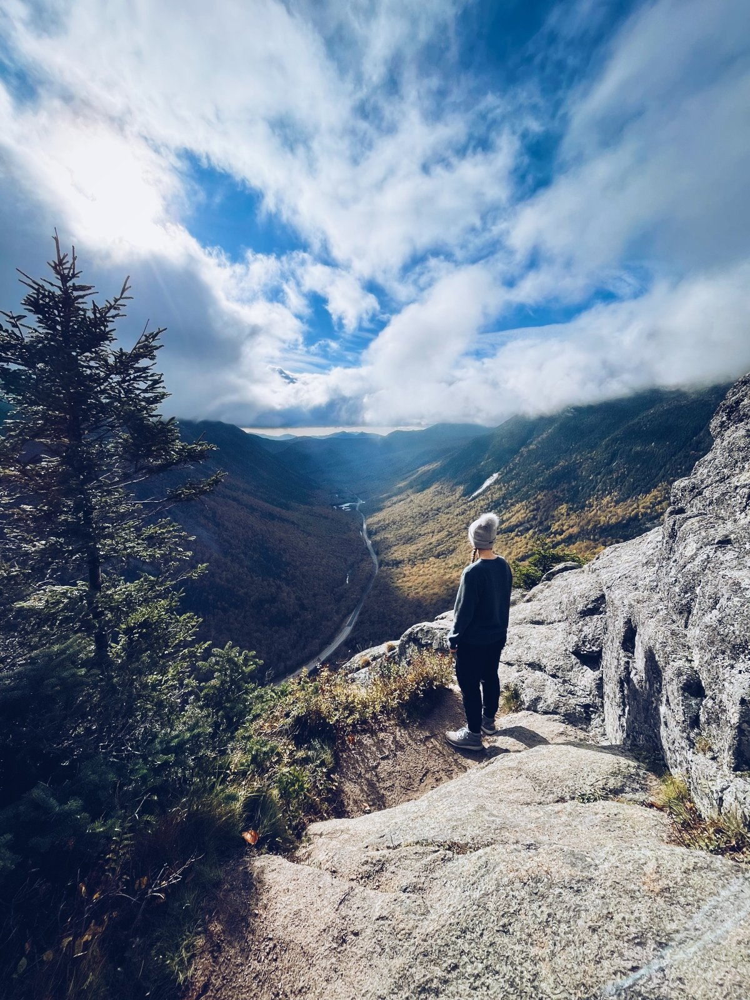
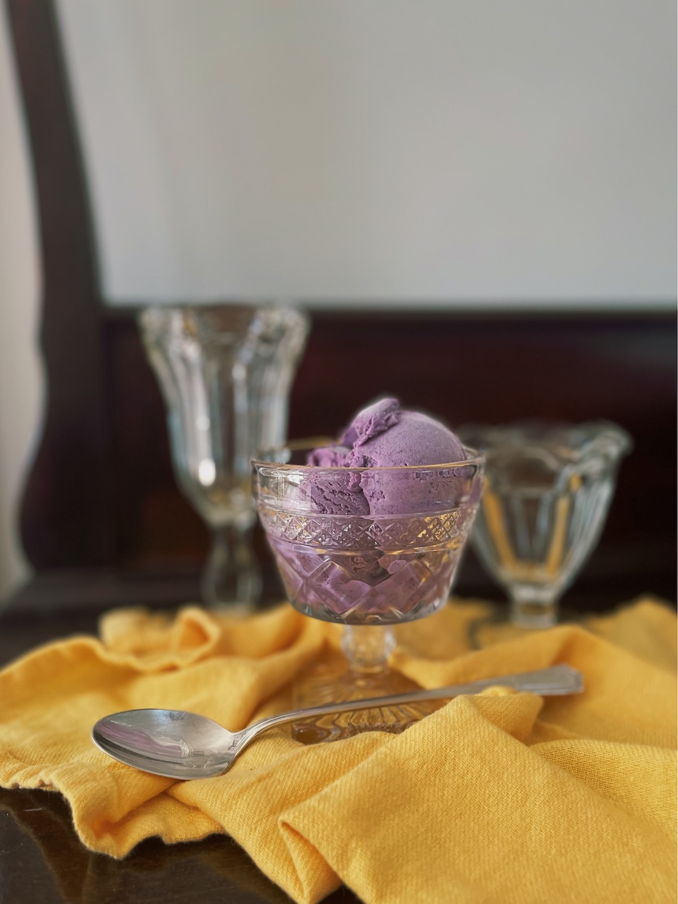

Rachael Charewicz
Full Stack Software Engineer



Dog Lover
I love animals of all kinds, but especially dogs. My rescue dog, Myla, is my best friend!

Adventure-Seeker
I love to explore new places, whether they are far away or right near home. When I'm planning a trip, I prioritise unique landscapes and new cultures, as I find that these trips leave the deepest impressions on me.

Ice Cream Enthusiast
I like to make fun and unusual ice cream flavors, especially as gifts for friends and family. From blueberry basil to sweet corn, I'll try anything!

Amateur Artist
I have a list a mile long of hobbies I want to try, but I've formed a particularly strong bond with painting. When I'm playing with watercolors and acyrlics and learning new techniques, time just flies by.